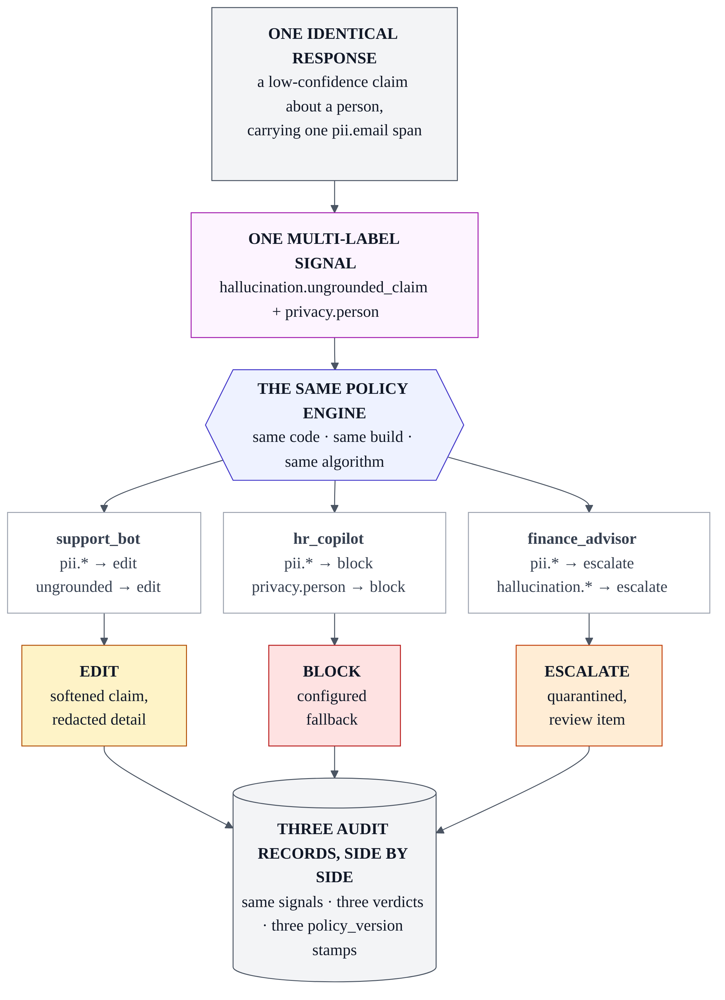
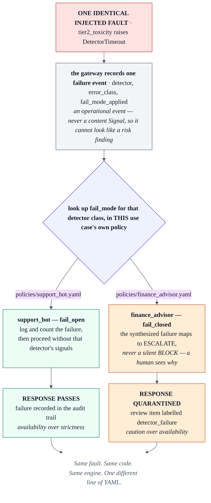
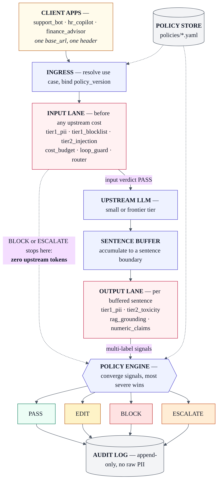
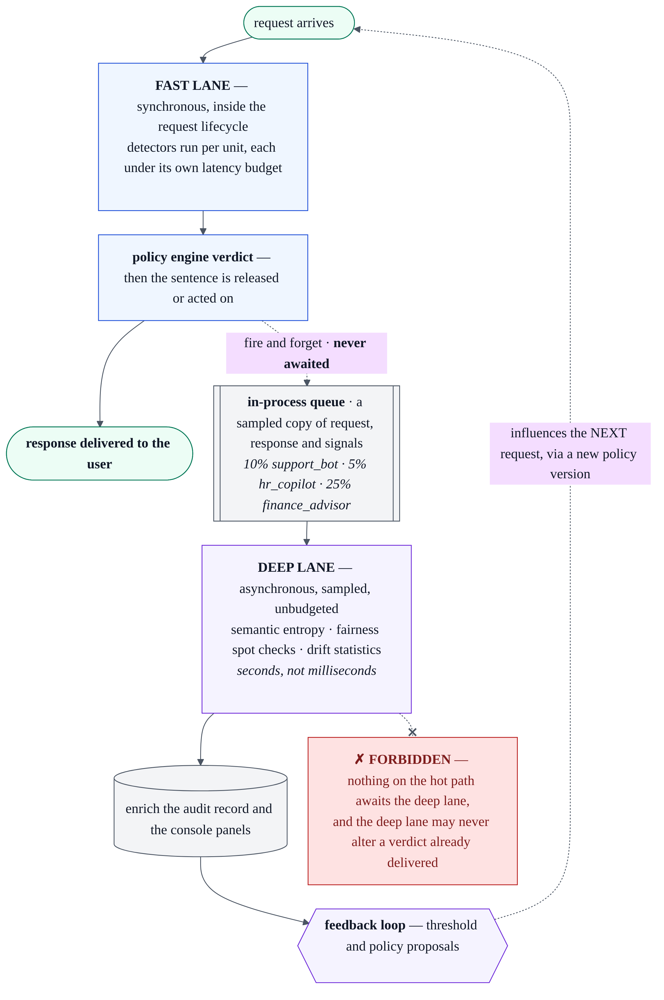
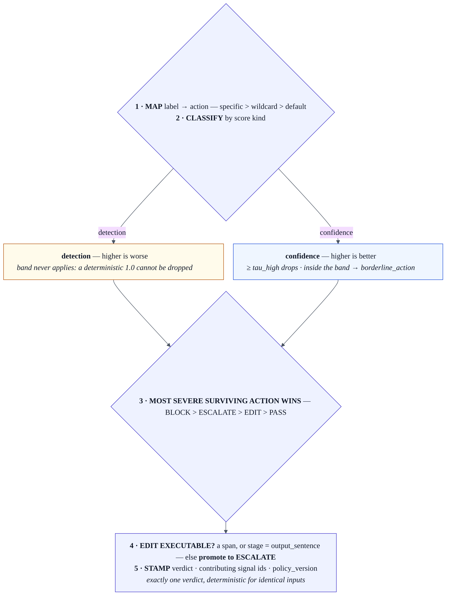

A real-time AI oversight gateway. Every LLM response is checked across performance, cost, and responsibility before a decision to pass, edit, block, or escalate it.
Point an OpenAI-compatible client at one URL and select a policy with one header. The same response can be edited for a support bot, blocked for an HR copilot, and escalated for a finance advisor. The difference is YAML configuration, not application code.
This document is the project README. It follows the section order of the README template supplied with the challenge brief, adapted for a standalone gateway service rather than a Drupal module.
Enterprises run many AI use cases at once — customer chatbots, internal copilots, decision support in regulated workflows — and each carries a different risk signature. Oversight today is fragmented and after the fact: quality is evaluated offline weeks later, cost overruns surface at month end, and bias or data leakage appears in an annual audit. There is no unified layer that inspects every response across accuracy, cost, and responsibility before delivery, and no way to vary that inspection per use case, geography, or risk appetite without rewriting code.
ControlPlane.ai is that layer. It is a reverse proxy that sits between an application and its LLM provider. It intercepts each response at the sentence boundary, runs a set of budgeted detectors across three planes, converges their signals in a single policy engine, and returns exactly one verdict — pass, edit, block, or escalate — before the user sees anything. Every decision is written to an append-only audit record naming the signals that drove it and the policy version that judged it.
The headline feature is that the policy is configuration. Thresholds, the label-to-action map, failure posture, geography, and budgets all live in per-use-case YAML, and the engine contains no use-case conditionals at all. One identical response therefore receives different verdicts in different pipelines with no code difference — which is what makes it a control plane rather than a content filter.
Source, issue tracker, and CI live at
github.com/harshitsaini17/controlplane-ai. Bug reports and feature suggestions belong in
that repository's issue queue at /issues. Design decisions are tracked in the repository
itself rather than in an external tracker: docs/03-decisions.md is the dated ADR log,
and docs/08-open-questions.md is the public ledger of deviations, standing
limitations, and logged minor resolutions.
This is a hackathon Round 2 prototype, and the boundary is drawn deliberately. Prototype-grade engineering is acceptable; fabricated results are not. Every number presented here — latency, detection rates, cost — comes from a measurement harness in the repository, and two of those numbers are published misses. There is no production HA or orchestration, no inspection of model internals, no real personal data anywhere in the corpus, and no custom model training. The Known limitations section is a complete register of what does not work rather than a selection of what does.
| 1 | Introduction | required |
| 2 | Table of contents | optional |
| 3 | Requirements | required |
| 4 | Installation | required |
| 5 | Configuration — policy as data, and the signature moment | required |
| 6 | Architecture — planes, interception, and lane isolation | supplementary |
| 7 | How a verdict is computed | supplementary |
| 8 | Detectors and signals | supplementary |
| 9 | Interfaces | supplementary |
| 10 | Audit and evidence | supplementary |
| 11 | Measured results | supplementary |
| 12 | Known limitations — what does not ship | supplementary |
| 13 | Troubleshooting | optional |
| 14 | Frequently asked questions | optional |
| 15 | Maintainers | optional |
Sections 1, 3, 4, and 5 are the template's required set and appear in its order. Sections 6 to 12 are additions this project needs: a gateway that makes claims about latency and detection accuracy has to show its architecture and its measurements, and the limitations register is what keeps those claims honest.
The gateway is a single Python process with no external service dependencies. There is no database server, message broker, or orchestrator to stand up — audit storage is SQLite, and the review queue and cost ledger are tables inside it.
| Component | Requirement | Notes |
|---|---|---|
| Python | 3.12 or 3.14 | Both are exercised by the CI matrix. Verified on 3.14.6, Arch Linux. |
| Operating system | Linux or macOS | Developed and measured on Linux. Nothing is platform-specific by design. |
| CPU | x86-64, no GPU | The latency budgets are CPU budgets. A GPU is not used and not required. |
| Disk | ≈2.5 GB with the model stack | ONNX runtime, a sentence-transformer, and the spaCy NER model dominate this. |
| Network | Only for the upstream provider | Air-gapped operation works with a local model; see the deployment note below. |
Declared in pyproject.toml across four extras, so an install can be scoped to what
is actually being done.
| Extra | Brings | Needed for |
|---|---|---|
(base) | FastAPI, uvicorn, pydantic, PyYAML, httpx | The gateway, policy loading, audit writes |
[dev] | pytest, coverage, linting | The test suite, the freeze gate, contract tests |
[ml] | onnxruntime, sentence-transformers, spaCy, presidio | Tier-2 detectors, grounding, NER enrichment |
[dashboard] | Console page dependencies | GET /console and the demo reveals |
Two version floors are constrained by Python 3.14 and must not be lowered:
pydantic>=2.13 (earlier pydantic-core has no cp314 wheel) and
spacy>=3.8.7 (earlier releases declare Requires-Python <3.13).
Install torch from the CPU index before the extras. Skipping that step makes
pip resolve the full CUDA stack — several gigabytes — for no benefit whatever, because the
documented latency budgets are CPU budgets.
All detector models are permissively licensed and run locally. Nothing is sent to a third-party classification service, which is what makes the responsibility plane viable in an air-gapped deployment.
| Purpose | Model / library | Runtime |
|---|---|---|
| PII detection and spans | Presidio recognizers plus repo-owned patterns | Deterministic, CPU |
| NER for entity enrichment | spaCy en_core_web_sm | CPU; a separate download step |
| Prompt-injection classification | ONNX classifier over strided windows | onnxruntime, CPU |
| Toxicity classification | ONNX classifier, per output sentence | onnxruntime, CPU |
| RAG grounding | Sentence-transformer embeddings | CPU |
Any OpenAI-compatible endpoint. Providers are classified by provenance, and the classification is
load-bearing rather than cosmetic: a measured-class provider reports real prompt-token counts,
so cost figures taken from it are citable, while a dev-class provider — a fixture or a replay
source — reports none. That distinction travels with every audit row in an
upstream_class column, so a reader can tell which figures are measurements. Serving
requires a measured-class provider and its key; the deterministic replay demo requires neither.
Sufficient to run the unit and contract suites, load and validate the policies, and exercise the audit database. No models, so no multi-gigabyte download.
git clone https://github.com/harshitsaini17/controlplane-ai.git
cd controlplane-ai
python -m venv .venv
.venv/bin/pip install -e ".[dev]"
.venv/bin/python -m pytest -qAdds the model stack. The torch line is first on purpose, per the warning above.
.venv/bin/pip install torch --index-url https://download.pytorch.org/whl/cpu
.venv/bin/pip install -e ".[dev,ml,dashboard]"
.venv/bin/python -m spacy download en_core_web_smNothing in the repository reads .env implicitly. That is deliberate — an implicit
loader makes it ambiguous which credentials a given run used — so the file is sourced explicitly into
the environment.
cp .env.example .env # then add provider values; never commit them
set -a; . ./.env; set +aThree variable names are normative: UPSTREAM_API_KEY,
REVIEW_WEBHOOK_URL, and CP_DB_PATH. Without the sourcing step every keyed
provider sees an unset variable, the startup canary reports UNVERIFIED rather than
satisfied, and the console chat renders a verdict with no model text behind it — the pipeline runs
correctly and nothing answers.
.venv/bin/uvicorn --factory controlplane.gateway.app:create_live_app --port 8080Then open http://localhost:8080/console. Two details in that command are not
stylistic. --factory is required because the module exposes factories and no
module-level app — a module global would leave a stale policy set behind a hot reload.
And the port is explicit because the default 8000 collides with a local OpenAI-compatible endpoint
used during development, which would make the gateway proxy to itself.
| Factory | Provider class | Use it for |
|---|---|---|
create_live_app() | measured | Serving. Token counts and cost figures from this path are citable. |
create_app() | dev | Tests, replay demo, and fault injection — paths where a fixture answers. |
The two factories differ by provenance, not by style. Raising the offline default to a measured class also re-classes every test, every replay run, and every regenerated report — and a measured provider that reports no prompt tokens is a fatal startup condition by contract, which is exactly what a fixture does.
.venv/bin/python -m demo.run_script --replayReplay is the reproducible path: it returns frozen fixtures instead of live model text, so the verdicts are identical on every run and the script exits nonzero if any beat fails. Live upstream text is nondeterministic, so a live run demonstrates the pipeline but cannot be a regression gate.
Four tiers, in the order they catch problems. The reasoning behind each is in
docs/TESTING.md.
.venv/bin/python -m pytest -q # 1. unit + contract
.venv/bin/python -m eval.run_all # 2. evaluation over the frozen corpus
.venv/bin/python -m eval.bench_latency --check # 3. latency, nonzero exit on breach
.venv/bin/python -m eval.fault_injection --reps 5 # 4. failure-posture invariants
.venv/bin/python -m eval.validate_dataset --freeze # corpus is byte-identical to approved
.venv/bin/python -m eval.check_derivations # every derived figure re-derivedEvery harness stamps CPU count and load average at start and end. An artifact whose start stamp exceeds the documented threshold is not citable, and one harness refuses to write at all rather than overwrite good evidence with contaminated evidence. Do not run tests, a build, or a second harness while a measurement is in flight — a published artifact was contaminated that way once, which is why the stamp exists.
Configuration is not a settings appendix in this project — it is the product. Thresholds, the
label-to-action map, failure posture, geography, streaming mode, and budgets all live in
per-use-case YAML, and the policy engine contains no use-case conditionals at all. An
if use_case == "support_bot" in Python would be a defect rather than an implementation
detail, and the test suite treats it as one.
Three policies ship in policies/, one per demo use case. Adding a fourth pipeline
means adding a fourth file — no code change, no redeploy, no branch in the engine.
# policies/support_bot.yaml — abridged
use_case: support_bot
policy_version: 3
geography: EU
risk_appetite: medium
streaming: true
thresholds:
tau_low: 0.35
tau_high: 0.70
budget:
monthly_usd: 500
per_request_max_tokens: 4000
loop_max_requests_per_min: 20
actions:
pii.*: edit # redact, then release
pii.api_key: block # a typed credential is already compromised
security.prompt_injection: block
toxicity.high: block
toxicity.moderate: pass
hallucination.ungrounded_claim: edit # soften
cost.budget_exceeded: block
default_action: pass
borderline_action: edit # action inside [tau_low, tau_high)
fail_mode:
tier1: fail_closed # never release unscanned personal data
tier2: fail_open # availability over strictness| Key | Meaning | Consequence of changing it |
|---|---|---|
policy_version | Monotonic version stamped into every audit record judged by this file. | The audit trail can attribute a verdict to an exact policy revision. Bump it whenever behavior changes. |
streaming | Whether responses stream sentence-by-sentence or are fully buffered. | false means nothing at all precedes the verdict — the correct posture for a regulated pipeline. |
thresholds.tau_lowthresholds.tau_high | The uncertainty band for confidence-kind scores. | Above tau_high the signal is dropped; below tau_low the mapped action applies; between them borderline_action decides. |
actions | Label-to-action map. Specific keys beat wildcards. | The primary control surface. pii.*: edit with pii.api_key: block redacts ordinary personal data but refuses a leaked credential outright. |
default_action | Action for a label with no entry. | Determines whether an unmapped label is permissive or restrictive by default. |
borderline_action | Action inside the uncertainty band. | Encodes risk appetite directly: the same ambiguous score becomes edit, pass, or escalate depending only on this line. |
fail_mode.tier1fail_mode.tier2 | What happens when a detector class times out or crashes. | A per-use-case decision, never an engineering preference. Flipping one is a policy-version change; changing the mechanism is a protocol deviation. |
budget | Monthly spend ceiling, per-request token cap, and loop rate limit. | Read pre-dispatch against the cost ledger, so a budget refusal costs zero upstream tokens. |
geography, risk_appetite | Jurisdiction and posture metadata. | Carried into the audit record so a decision can be explained in its regulatory context. |
PyYAML parses YAML 1.1, where bare on and off are booleans. Any
policy value that is the literal string on or off — the
consistency and cascade_probe settings — must be quoted.
streaming is a genuine boolean and stays unquoted.
Every row below is a difference in data. None of them is a difference in code.
| Setting | support_bot | hr_copilot | finance_advisor |
|---|---|---|---|
policy_version | 3 | 1 | 4 |
streaming | true | true | false — nothing precedes the verdict |
pii.* | edit | block | escalate |
borderline_action | edit | pass | escalate |
fail_mode.tier1 | fail_closed | fail_closed | fail_closed |
fail_mode.tier2 | fail_open | fail_open | fail_closed |
| Monthly budget | $500 | $800 | strict |
| Signature verdict | EDIT | BLOCK | ESCALATE |
One header. The client change is a base_url and that header; nothing else in the
calling application moves.
PROMPT='Confirm the record on file.'
curl -sS http://localhost:8080/v1/chat/completions \
-H 'Content-Type: application/json' \
-H 'X-ControlPlane-Use-Case: support_bot' \
-d "{\"model\":\"small\",\"messages\":[{\"role\":\"user\",\"content\":\"$PROMPT\"}]}"
# verdict = EDIT — the SSN is rendered as [REDACTED:ssn]
curl -sS http://localhost:8080/v1/chat/completions \
-H 'Content-Type: application/json' \
-H 'X-ControlPlane-Use-Case: hr_copilot' \
-d "{\"model\":\"small\",\"messages\":[{\"role\":\"user\",\"content\":\"$PROMPT\"}]}"
# verdict = BLOCK — personal data withheld under the hr_copilot policy
curl -sS http://localhost:8080/v1/chat/completions \
-H 'Content-Type: application/json' \
-H 'X-ControlPlane-Use-Case: finance_advisor' \
-d "{\"model\":\"small\",\"messages\":[{\"role\":\"user\",\"content\":\"$PROMPT\"}]}"
# verdict = ESCALATE — quarantined and routed for human verificationSame content, three policies, zero code difference. The verdicts above are the replay-verified values for frozen fixture PII-001; live upstream text is nondeterministic, so a live run shows the same mechanism against different words.

When a detector times out or crashes, the gateway synthesizes an operational failure record
— explicitly never a content signal, because conflating the two would let an infrastructure event
appear in the audit trail as a risk finding. The policy's fail_mode for that detector
class then decides what happens, and the two shipped answers are opposites.
Under fail_open the failure is logged, a counter increments, the missing detector's
signals are simply absent, and the response is released — availability chosen over strictness, with
the gap visible in the audit record. Under fail_closed the synthesized failure maps to
escalate, never to a silent block, so a human sees the response and the reason it was held.

fail_open and quarantines it under fail_closed. Reproduce with eval.fault_injection, which exits nonzero if any invariant breaks.curl -sS http://localhost:8080/admin/policies # active versions
curl -sS -X POST http://localhost:8080/admin/policies/reloadPolicies are validated against their schema on load, so an invalid file is rejected rather than
partially applied. Because policy_version is stamped into each audit record at decision
time, a reload leaves earlier records attributable to the exact policy that judged them — the audit
trail does not retroactively change its mind.
One FastAPI process, three planes of checks, exactly one verdict per unit of text. The planes are signal families, not separate services: detectors emit independent evidence, and only the policy engine converges it. Keeping them separate is what allows a single sentence to be a performance problem and a responsibility problem at the same time without either finding suppressing the other.
| Plane | Fast path — synchronous, per sentence or request | Deep lane — asynchronous, sampled |
|---|---|---|
| Performance | RAG grounding score, numeric-claim check | Semantic-entropy clustering, drift statistics |
| Cost | Budget gate, token estimate, routing choice | Cost-per-outcome aggregation, loop analytics |
| Responsibility | Tier-1 PII and blocklist; Tier-2 injection on input, toxicity on output | Fairness spot checks, safety-taxonomy sampling |

Checks run on a sentence buffer — not token by token, and not on the finished response. Both alternatives are easier to build and both break something load-bearing. Token-level checking cannot see a claim, because a claim is not present until a clause completes. Full-response checking can see everything but has already streamed a flagged sentence to the user by the time it decides. The sentence boundary is the smallest unit at which the guarantee holds: for a flagged sentence, no part of it reaches the client.
The input lane runs before dispatch, which gives the cost plane something the output path cannot offer. A prompt that trips the blocklist, carries an injection attempt, or exceeds the monthly budget is refused for zero upstream tokens — the cheapest possible interception is the one that happens before the provider is called at all.
Expensive analysis is genuine oversight, but it cannot be on the hot path. Semantic entropy takes seconds, and no latency budget survives it. The split is therefore enforced rather than intended, and it has two halves that are easy to conflate: nothing in the request lifecycle awaits the deep lane, and the deep lane may never alter a verdict already delivered. Its findings change the next request, through the feedback loop and a proposed policy diff — never the one that has already been answered.
A sampled copy of each request, response, and signal set is handed to an in-process queue and forgotten. Sampling rate is per-policy. What comes back enriches the audit record and the console panels; a post-hoc re-decision would make the audit trail disagree with what the user was actually served, which is the specific failure this boundary exists to prevent.

One deterministic path from a set of signals to exactly one verdict. Identical inputs give an identical verdict, and the steps are fixed for every use case — the policy supplies the numbers and the mappings, never the control flow.

| Step | What happens |
|---|---|
| 1 — map | Each label resolves to an action: a specific key beats a wildcard, which beats default_action. A signal's action is the most severe across its own labels. |
| 2 — band | Applies to confidence-kind scores only. Above tau_high the signal is dropped; between the thresholds borderline_action decides; below tau_low the mapped action stands. Detection-kind scores bypass this entirely. |
| 3 — converge | The most severe surviving action wins: block > escalate > edit > pass. If nothing survived, the verdict is pass. |
| 4 — editability | An edit is only an edit if there is something to edit — a span, or a full output sentence. Otherwise it is promoted to escalate. Transforms redact at pii.* spans or soften a claim, then Tier-1 PII re-runs as a guard on the result. |
| 5 — stamp | Verdict, contributing signal ids, and policy_version are written to the audit record — stored, not recomputed later. |
Two of those steps answer the questions reviewers actually ask. Score polarity is typed, so
a deterministic regex hit scoring 1.0 can never be silently discarded by a confidence threshold —
band logic is defined for confidence-kind signals and does not touch detection-kind ones. And an
edit with no editable extent is promoted, never downgraded: a span-less signal mapped to
edit becomes escalate, so a configuration that cannot be carried out fails
toward human review rather than toward release.
Detectors emit evidence. They never choose actions — that separation is precisely what keeps policy in configuration, because a detector that decided anything would be a use-case conditional written in Python.
| Detector | Stage | Plane | Emits |
|---|---|---|---|
tier1_pii | input + output sentence | responsibility | pii.* — span-accurate, so redaction is possible |
tier1_blocklist | input + output sentence | responsibility | security.blocklist |
tier2_injection | input | responsibility | security.prompt_injection — ONNX classifier, max over strided windows for full input coverage |
tier2_toxicity | output sentence | responsibility | toxicity.moderate / toxicity.high |
rag_grounding | output sentence | performance | hallucination.ungrounded_claim — only when the request carries context documents |
numeric_claims | output sentence | performance | hallucination.unsourced_numeric — quantity-shaped numerals with no citation marker |
fast_consistency | output full | performance | hallucination.low_confidence — specified, not shipped (SL-6) |
cost_budget | input | cost | cost.* — ledger lookup plus a token estimate |
loop_guard | input | cost | cost.loop_detected |
conv_tracker | conversation | responsibility | conversation.cumulative_risk |
entity_enricher | enrichment | responsibility | appends privacy.person to an existing signal |
Per-detector latency budgets are normative in the detection spec; measured P99s are in Measured results. What each detector actually ran — and what was expected and did not run — is recorded per request, so absence of coverage is a fact a reader can see rather than infer.
A single sentence can be a fabrication and a privacy exposure at once. The naive design
emits two signals and correlates them afterwards, which double-counts the same text and makes the
audit record ambiguous about how many findings there were. Instead one signal carries labels from
multiple planes, and enrichment appends to that signal rather than emitting alongside it:
NER over the span and its sentence window finds a person, and privacy.person joins the
existing hallucination.ungrounded_claim on the same signal. Two planes, one finding, one
convergence.
The integration surface is deliberately one line of client change: a base_url and a
header.
| Endpoint | Purpose |
|---|---|
POST /v1/chat/completions | OpenAI-compatible proxy. X-ControlPlane-Use-Case selects the policy; X-ControlPlane-Conversation-Id enables conversation tracking; body controlplane.context supplies source documents for grounding. |
GET /metrics | Metrics snapshot read by the console and the demo reveals. |
GET /admin/review?status=pending | The quarantine queue. PII spans are pre-redacted in the listing, and each item is labelled by escalation cause. |
POST /admin/review/{review_id} | Human override. Approve releases the stored response; reject confirms the catch. Both append to the audit lineage with a reviewer note. |
GET /admin/requestsGET /admin/requests/{request_id} | Read-only forensic trace for a single request. |
GET /admin/policiesPOST /admin/policies/reload | Active policy versions, and hot reload so behavior changes without a restart. |
GET /console | Same-origin console pages served by the gateway itself. |
Response shapes carry the verdict explicitly rather than hiding it. An edited response is flagged
in a header. A block returns HTTP 200 with the policy's configured fallback and
finish_reason: content_filter, so an OpenAI-compatible client handles it as a normal
completion. An escalation returns HTTP 202 with a review_id. Errors never include prompt
or response content.
It is a localhost demo surface. This is a stated limitation rather than an oversight, and it is
the first thing to fix before this is exposed on any network — the review endpoints can release
quarantined content, and /admin/requests reads the forensic trace.
Oversight that cannot be inspected afterwards is not oversight. Every request writes one
append-only record naming which signals drove the verdict, which policy version judged it, which
detectors ran, and what it cost. Storage is SQLite across four tables:
audit_records, review_items, deep_audit_results, and
cost_ledger.
Three invariants hold across that schema, and each exists because its opposite is a plausible mistake.
review_items.quarantined_text
— and PII is masked before it is written. Everywhere else, the audit trail records the
category and fact of a detection, never the matched value. A privacy tool that leaks
personal data into its own logs has defeated itself.Provenance travels with each row too. upstream_class records whether a
measured or dev provider answered, model_used records the concrete
provider model id rather than a tier name, and record_status distinguishes a complete
record from a partial one so a crash mid-request is visible instead of silently absent.
An escalation is not a dead end. A human decides, the decisions are aggregated per label, and a
threshold utility proposes a YAML diff. Nothing is ever auto-applied — a human applies the
diff, policy_version bumps, and the diff itself becomes the audit trail for why the
policy changed. An oversight system that retuned its own thresholds unattended would have no
accountable author for its behavior.
Every figure below is produced by a command in the repository, on a quiet host, over the frozen corpus. Two of them are misses, and they are published as misses.
| Metric | Measured | Target |
|---|---|---|
| Engine conformance | 840/840 decisions — 280 cases × 3 policies, perfect detection assumed | ≥ 0.90 — met |
| Tier-1 PII precision | 1.000 | Report honestly |
| Tier-1 PII recall | 0.8852 — all 7 misses are the documented bare-7-digit exclusion | 0.95 — MISSED, target unmoved |
| Injection detector | Precision 1.000 / recall 0.150 — blind first contact | No numeric target |
| End-to-end policy agreement | 0.851 / 0.851 / 0.825 over 194 of 280 cases; partial coverage and masked detector failures remain | ≥ 0.80 per pipeline — met |
| Input-lane hold | P99 27.49 ms, n = 200 | P99 < 50 ms — met |
| Detector P99s | blocklist 0.020 ms · PII 0.133 ms · numeric 0.277 ms · toxicity 23.741 ms · injection 25.348 ms | Tier-1 < 1 ms; numeric < 5 ms; Tier-2 < 25 ms — injection MISSED |
| Fault injection | In-process 5/5 runs at 39/39; separate processes 3/5 clean and two at 38/39 | All 39 invariants per run |
| Cascade cost curve | +50% at f = 0; +25% at f = 0.25; break-even f = 0.50; loss above it | No point target; f is not computed because the router does not ship |
| Command | Produces |
|---|---|
.venv/bin/python -m eval.run_all | Per-detector precision/recall/F1 and both policy matrices → reports/eval_report.md |
.venv/bin/python -m eval.bench_latency --check | Latency table → reports/latency_report.md; exits nonzero on a budget breach |
.venv/bin/python -m eval.fault_injection --reps 5 | Failure-posture invariants → reports/fault_injection_report.md |
.venv/bin/python -m eval.cost_simulation | The cascade cost curve → reports/cost_report.md |
.venv/bin/python -m eval.check_derivations | Re-derives every figure a document claims to have derived |
First contact is blind. Nothing is tuned toward a target, and a target is never moved to accommodate a result. The evaluation corpus is frozen and byte-checked before anything is computed, so a case cannot be edited as a fix — only through a new freeze cycle. When a revision improves a figure, the earlier column is retained rather than replaced. A missed target becomes a registered limitation, which is why two rows above are red and the targets beside them are unchanged.
The check that enforces this hardest is check_derivations, which reports three
outcomes rather than two: OK, MISMATCH, and NO SOURCE — a document claiming a figure its
artifacts cannot produce. Such a figure gains a derivation or loses the claim; there is no third
state.
This register exists so prototype limits are reviewable rather than presented as completed capability. It is complete, not a selection: ten IDs, of which one is closed.
| ID | Limitation | Status and plan |
|---|---|---|
| SL-1 | PII recall is 0.8852 against a 0.95 target. | Open; target unmoved. Seven known bare-7-digit misses are the price of precision 1.000 — a deliberate trade, not an unexplained gap. |
| SL-2 | Invalid NANP area codes can still fire under the v1 phone superset behavior. | Open; precision hardening requires a new corpus freeze cycle. |
| SL-3 | Price provenance requires re-verification at submission time. | Downgraded for the two bound provider model ids; comparisons against retired models remain barred. |
| SL-4 | A genuinely local fallback was previously absent. | Closed on the owner host with llama3.2:3b. No fallback latency or cost claim is made from the development host. |
| SL-5 | Tier-2 latency evidence is low-concurrency. | Open; the published single-thread column already shows breaches, and a proper load test is out of scope for the prototype. |
| SL-6 | fast_consistency is specified but not implemented. | Cut to roadmap. Context-free performance checking is the missing case — grounding requires context documents. |
| SL-7 | The grounding band cannot be calibrated: tau_low 0.8365 ≥ tau_high 0.7157. | Open; the 56/78 oracle ceiling points at a detector-model change, not at threshold tuning. |
| SL-8 | Injection attributable P99 is 25.348 ms against a 25 ms budget. | Open measured breach; target unmoved. Runtime tuning or serving hardware is roadmap. |
| SL-9 | The two-plane overlap demo cut worked for only 2 of 3 policies. | Cut from the demo path after 10 repetitions. Fixture PII-001 remains the deterministic signature beat. |
| SL-10 | The two-tier cascade router is not built. | Open. Budget gating ships, but the cascade fraction f has no producer, so cost saving remains a curve with break-even at f = 0.50 rather than a measured saving. |
Two further boundaries are stated in the sections above rather than here, and both matter to a
reviewer: the admin API has no authentication in v1, and the cascade cost figures are a
simulated curve, not an achieved saving. Detailed rationale and the beat-by-beat record of what
was cut are in docs/09-engineering-notes.md; the authoritative register is
docs/08-open-questions.md.
The repository was built spec-first: contracts preceded code, AI implementation agents worked under a binding operating manual, an independent AI review challenged each checkpoint, and humans adjudicated every contract change. The ledger records 36 ADRs ruled, 32 deviations all filed and closed with none open, and ten registered SL IDs — SL-4 closed, leaving nine active limitations. Every minor resolution is logged as well, so the open-deviation count is honest rather than merely low.
It means nothing is undecided. What is missing is stated in the register above and in the public ledger, and it is substantial. The two claims are independent, and reading the first as the second would be the wrong conclusion to draw from this repository.
Every entry below is a failure that actually occurred during development, with the cause rather than a guess at it.
| Symptom | Cause and fix |
|---|---|
| pip downloads several gigabytes of CUDA packages | torch was resolved from the default index. Install it from the CPU index first, then the extras. The latency budgets are CPU budgets, so the CUDA stack buys nothing. |
pydantic-core or spacy fails to build a wheel | A version floor was lowered. On Python 3.14, pydantic>=2.13 and spacy>=3.8.7 are hard floors — earlier releases have no cp314 wheel or exclude 3.13+ outright. |
OSError: [E050] Can't find model 'en_core_web_sm' | The spaCy model is a separate download, not a pip dependency. Run .venv/bin/python -m spacy download en_core_web_sm. |
uvicorn reports it cannot find an attribute named app | --factory was omitted. The module exposes factories and no module-level app by design, because a module global would leave a stale policy set alive behind a hot reload. |
| Requests hang, or the gateway appears to call itself | The gateway is on port 8000, which collides with the local OpenAI-compatible endpoint used in development — so it proxies to itself. Serve on 8080. |
| Symptom | Cause and fix |
|---|---|
The console chat renders a verdict but no model text; the startup canary reports UNVERIFIED | .env was not sourced. Nothing in the repository loads it implicitly, so every keyed provider sees an unset variable. Run set -a; . ./.env; set +a in the shell that starts uvicorn. The pipeline is working correctly here — there is simply nothing upstream to answer. |
| Boot fails with a prompt-token error | A measured-class provider reported no prompt tokens, which is fatal by contract because its cost figures would then be uncitable. Almost always a fixture behind a measured classification. Use create_app() for offline work instead of promoting the provider. |
| A policy edit has no effect | Policies load at startup. Either POST /admin/policies/reload, or restart. Confirm the active set with GET /admin/policies. |
A policy value behaves as true/false when a string was intended | PyYAML parses YAML 1.1, where bare on and off are booleans. Quote the consistency and cascade_probe values. streaming is a real boolean and stays unquoted. |
| A response was blocked but the client saw HTTP 200 | Working as specified. A block returns 200 with the policy's configured fallback and finish_reason: content_filter, so an OpenAI-compatible client handles it as an ordinary completion. An escalation is the one that returns 202, with a review_id. |
| An expected detector produced no signal | Check the per-request detectors_json trace via GET /admin/requests/{request_id}. It distinguishes ran, not_run, and unavailable — grounding, for instance, does not run at all unless the request carried context documents. |
| Symptom | Cause and fix |
|---|---|
eval.run_all prints NFR-EVAL-001: MISSED | Expected. That is SL-1 — PII recall 0.8852 against 0.95 — a real unmet target that is deliberately not tuned away. It is a published miss, not a broken run. |
bench_latency --check exits nonzero | Check which row breached. The injection detector at 25.348 ms against 25 ms is SL-8, a known and published breach. A different row breaching is a genuine regression. |
| The freeze gate fails | The labeled corpus is no longer byte-identical to its approved state. A frozen case is not editable as a fix — reverting the edit is the fix, and a genuine change requires a new freeze cycle. |
| Fault injection reports 38/39 instead of 39/39 | This harness is load-sensitive and its own report records host load. Re-run on a quiet host; the invariant that dropped is timing-dependent, not a posture failure. |
| A measurement harness exits 2 and writes nothing | Deliberate. The host was too loaded to produce citable evidence, so the harness refused to overwrite a good artifact with a contaminated one. Quiet the host and re-run. |
check_derivations reports NO SOURCE | A document claims a figure its artifacts cannot produce. The figure gains a derivation or loses the claim — there is no third option, and this is a gate in CI. |
| Latency numbers look worse than the published ones | Check the load stamp at the head of the report. An artifact whose start stamp exceeds the documented threshold is not citable at all. Measurement runs must not share a host with tests, a build, or another harness. |
No, and the difference is testable. A filter has one policy compiled into it. Here the same response, the same signal set, and the same build produce edit, block, or escalate depending only on which YAML file is selected by a request header — and the engine contains no use-case branch to do it. It also converges three planes rather than one: a budget breach and a hallucination are handled by the same decision path as a toxicity hit.
Token-level is finer but cannot see a claim — a claim does not exist until a clause completes. Full-response checking sees everything but has already streamed a flagged sentence by the time it decides. The sentence buffer is the smallest unit at which the actual guarantee holds: for a flagged sentence, no part of it reaches the client.
Yes. The boundary is the OpenAI-compatible wire format, so any provider speaking it works, including a local model — which is what makes an air-gapped deployment possible, since every detector model runs locally too. Local fallback is verified on the owner host only, and no latency or cost claim is made for it from the development host.
No, and that is enforced rather than merely intended. The deep lane is never awaited on the hot path, and it may not alter a verdict already delivered. Its findings enrich the audit record and feed a proposed policy diff that affects the next request. A post-hoc re-decision would make the audit trail disagree with what the user was actually served.
The input-lane hold measures P99 27.49 ms against a 50 ms budget at n = 200. Per-detector P99s range from 0.020 ms for the blocklist to 25.348 ms for injection — and that last figure is a published breach of its 25 ms budget, registered as SL-8. All of it is single-threaded CPU measurement on a quiet host; concurrency behavior is explicitly not evidenced, which is SL-5.
Add a fourth YAML file to policies/ and send its name in the
X-ControlPlane-Use-Case header. No code change, no engine branch, and
POST /admin/policies/reload avoids even a restart.
The gateway records an operational failure event — never a content signal — and the policy's
fail_mode for that detector class decides. fail_open releases the response
with the gap recorded in the audit trail; fail_closed escalates to human review, never
silently blocks. Both behaviors are exercised by eval.fault_injection, which exits
nonzero if an invariant breaks.
No. The evaluation corpus is synthetic, and the audit schema is built so that a leak is structurally hard: exactly one column may hold verbatim model output, PII is masked before that write, and every other record stores the category and fact of a detection rather than the matched value. A privacy tool that leaked personal data into its own logs would have defeated itself.
Because a hackathon README that reports only passes is not evidence of anything. First contact with the frozen corpus is blind, nothing is tuned toward a target, and a target is never moved to accommodate a result. A missed target becomes a registered limitation with its measured value attached. Two rows in the results table are misses for exactly this reason.
Three things, in order. The admin API has no authentication. The cascade router is not built, so the cost saving is a simulated curve with break-even at f = 0.50 rather than an achieved number (SL-10). And latency evidence is single-threaded, so concurrent behavior under load is unknown (SL-5).
Team b24bb1029, Indian Institute of Technology Jodhpur. Submitted to the Accenture Innovation Challenge 2026, Round 2.
| Member | Roll number | Branch |
|---|---|---|
| Priyanshu Pandey — team lead | B24BB1029 | Bioengineering, third year |
| Harshit Saini | B24CS1031 | Computer Science, third year |
| Jayant Soni | B24CM1033 | Artificial Intelligence & Data Science, third year |
Issues and feature requests belong in the repository's issue queue at
github.com/harshitsaini17/controlplane-ai/issues. Design decisions are tracked in the
repository rather than an external tracker: docs/03-decisions.md is the dated ADR log and
docs/08-open-questions.md is the public ledger.
| Document | What it answers |
|---|---|
docs/00-charter.md | Goals, non-goals, assumptions, success criteria |
docs/01-requirements-and-scenarios.md | FR/NFR requirements and the three demo use cases |
docs/02-architecture.md | Planes, lane split, policy engine placement, request lifecycle |
docs/03-decisions.md | The ADR log — 36 dated rulings |
docs/04-policy-and-detection-spec.md | Detector contracts, latency budgets, the verdict state machine, fail-mode rules |
docs/05-api-and-data-contracts.md | Endpoint contracts, policy schema, audit DDL, telemetry spans |
docs/06-evaluation-plan.md | Corpus design, precision/recall methodology, benchmark method |
docs/07-demo-script.md | The beat-by-beat demo, treated as a regression suite |
docs/08-open-questions.md | The public ledger: deviations, SL register, logged minor resolutions |
docs/09-engineering-notes.md | Full claims table, derivations, historical columns, cut record |
docs/TESTING.md | The four verification tiers and the reasoning behind each |
docs/diagrams/ | Authoritative mermaid sources, each naming the spec sections it derives from |
controlplane/ gateway, detector, policy, audit, cost, and telemetry code
policies/ three validated per-use-case YAML policies
eval/ frozen corpus, scoring, latency, fault, cost, derivation harnesses
demo/ headless scripted demo and replay fixtures
dashboard/ same-origin console pages served by the gateway
reports/ committed, reproducible evidence — not build output
docs/ contracts, ADRs, ledgers, testing guide, engineering notes
tests/ contract, regression, evaluation, and demo-path gates| Artifact | Status |
|---|---|
| Public repository | github.com/harshitsaini17/controlplane-ai |
| Business proposal | b24bb1029_ControlPlane_Business_Proposal.pdf |
| README — this document | b24bb1029_ControlPlane_README.pdf |
| Working prototype | Runs from the Installation steps above; deterministic replay demo included |
| Demo video | Not yet recorded |
| License | Not yet chosen — tracked in docs/08-open-questions.md |
The diagrams in this document are print-scale simplifications. The authority is the mermaid source in
docs/diagrams/, where each file names the specification sections it was derived from, so a
diagram that has drifted from the spec is auditable rather than merely wrong. Two sources carry no
tracked render on purpose: theirs depicted a since-retired schema column, and a picture of a retired
schema is worse than no picture.